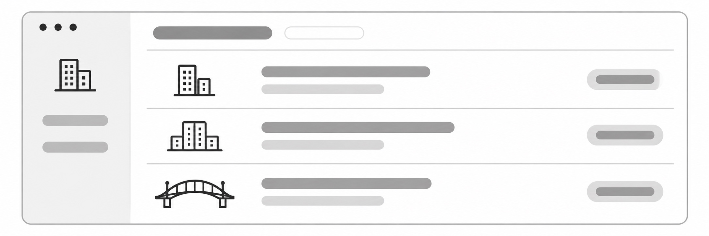

Conservation participation
Custodial licences associated with conservation land or projects give this model its starting point. The journey needs to explain the licence, what participation means and the project it supports.
02 MySquare
Real-world assets · Platform operations
MySquare’s broader product model supports two distinct propositions: conservation participation through custodial licences, and investment offerings linked to real-world assets such as land and buildings. It connects the project proposition with its marketing, launch and buyer journey.

The problem
A conservation participant needs to understand the custodial licence and the land or project it relates to. A prospective investor needs to understand the asset offering and the rights attached to it. Operators need to explain that distinction, build awareness and guide each audience through the relevant information, verification and purchase steps.
Two product models
Custodial licences associated with conservation land or projects give this model its starting point. The journey needs to explain the licence, what participation means and the project it supports.
Land, buildings and other real-world assets form the underlying proposition. The journey needs to explain the specific offering and its documented rights, with clear verification and purchase steps.
The working system
Set up the project, releases, pricing and map-based inventory.
Let buyers explore available squares and reserve their selection.
Apply verification requirements and operator-confirmed payment steps.
Create the confirmed allocation and make it available in the buyer’s account.
Product decisions
Project management, buyer accounts and platform operations have distinct journeys and access boundaries. Each needs the right information without exposing another project’s records.
The pilot centres on an off-chain ownership ledger and operator-confirmed payments. The product journey follows that model from reservation through confirmation.
Engineering the system
Release-scoped availability checks, expiring reservations and transactional completion connect the selected squares to the eventual purchase record.
The application combines branded project sites, release management, verification and buyer allocation views around the same project context.
Proposed extension Agentic AI in the solution
Proposed agents could support marketing and buyer journeys across both models. They would use approved project information to prepare campaign content, coordinate launch tasks and help prospective buyers find the information relevant to their participation. Human review would control published claims and transaction decisions.
A marketing agent could turn approved project information into draft campaign material, awareness content and launch tasks. An operator would review claims, licence descriptions and asset information before publication.
A buyer-support agent could retrieve the relevant project terms, explain the next onboarding step and identify missing information. It could prepare an operator follow-up for verification or payment exceptions, without making investment recommendations or approving transactions.
An operator prepares a launch or a buyer needs help progressing.
Retrieve approved project information, participation terms and relevant buyer records.
Draft campaign material, a buyer response or an operational follow-up.
A person reviews public claims and authorises any transaction-related action.
These agentic capabilities are proposed extensions, not implemented features of the reviewed pilot. Authorised operators would retain verification approval, payment confirmation and ownership changes. Investment rights would follow the terms of the specific offering; no guaranteed returns or unverified security backing are claimed.
In practice
The product brings the project proposition and buyer operations into one journey. Conservation licences and asset-linked investment offerings require distinct explanations of participation and rights. In the current off-chain pilot, operators manage releases and confirmed allocations, and buyers can revisit the square references associated with their purchases.
The current pilot uses an off-chain ledger. On-chain settlement, automated payment execution and verified distributions remain outside the enabled pilot scope.
Work with Whitespace
Tell us about the operation, the systems involved and the decisions you need the product to support.